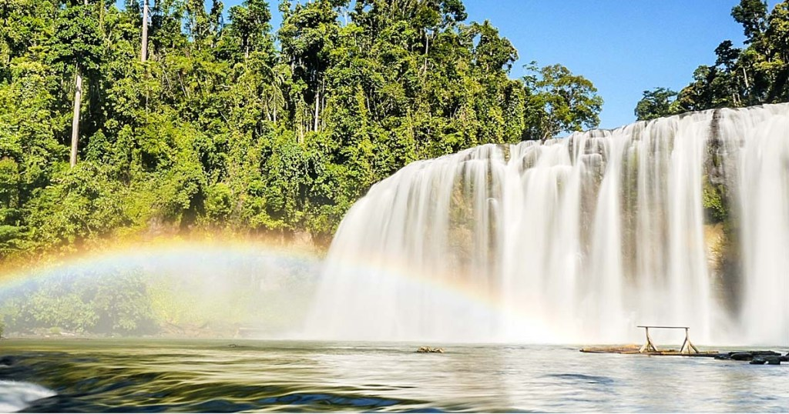

Mindanao, the second-largest Philippines primary island after Luzon, encompasses the southernmost part of the archipelago. It's the farthest island region from the capital Manila but you'll find many stunning natural wonders here that will surely be worth the trip.
Mindanao's largest city is Davao, which showcases the conservation area for the Philippine Eagle, the country's national bird. Davao is also home to the colorful Kadayawan Festival, one of the major festivals in the Philippines.
Some of the top breathtaking tourist spots in Mindanao and also some of the best places to visit in the Philippines include the laidback surfing hotspot called Siargao Island, the tropical beaches of Samal Island dubbed the largest resort city, the small but beautiful island of Camiguin that's blessed with white-sand beaches, and the multitude of waterfalls in Iligan. As a mountainous region, Mindanao is also home to Mount Apo, the highest mountain in the country and famous for hiking tours.
Mindanao Tour
Slideshow Gallery
The Best of Mindanao
|
10 days Start and end in Davao | |
| Tour Operator: G Adventures | Max group size: 12 |
| Age range: 18 to 60 | Operated in: English |
| Tour id: 00003 | Hygiene Measure: Included |
| Private available: Available per request with additional payment | |
Highlights
|
Ready-to-book adventures, personalized
| Personal Make your adventure more you | Private Enjoy a tour focused solely on your travel group |
| Professional Access our Travel Experts' insider knowledge | Protected Travel within your own bubble |
Itinerary
The most convenient way to go to the islands of Mindanao is by plane. There are regular flights from Manila and select international airports to Davao City's International Airport, Cagayan de Oro's Laguindingan International Airport, Zamboanga's International Airport, and Siargao's Sayak Airport.
Davao
"Davao City is the regional center of Davao Region. It is the most populous city in Mindanao and the third largest city in the Philippines. Known for its bustling economic activities, urban build-up and modern amenities, Davao City is one of the most important economies in the island, and the third most important urban center in the Philippines.
Things to do:
-
Philippine Eagle Centre (Davao)

Home to the critically endangered bird species, the Philippine Eagle, the Philippine Eagle Centre is an 8-hectare wildlife breeding center in Davao City that shelters the only captive eagles in the country. From massive aviaries to smaller cages for other endemic birds, the world-class park features enclosures and towering aviary duplexes resembling those in Singapore Zoo.
-
Aliwagwag Falls Eco Park (Davao)
Another must-see attraction in Davao is the Aliwagwag Falls Eco Park, one of the most scenic waterfalls in the Philippines. It boasts the highest waterfalls in the Philippines, the 84-tiered Aliwagwag Falls, which stands at 1,110 feet and features over 130 cascades.
-
Malagos Garden Resort (Davao)
Up next is an agri-tourism resort in Davao City, the Malagos Garden Resort. It is a 12-hectare lush greenery resort that makes you feel closer to nature. What makes it one of the leading recreational resorts in Davao is its exciting multitude of activities like skating, horseback riding, animal feeding, and vegetable harvesting.
-
Eden Nature Park (Davao)
Nestled at the southern end of Davao City, Eden Nature Park is a 40-hectare mountain resort sitting at 3,000 feet above sea level. One of the best tourist spots in Davao, it is a great spot to unwind, try recreational activities, and capture spectacular views. The mountain resort has different types of accommodation, ranging from garden/mountain villas to log cabins.
-
Mount Apo (Davao)
Towering over Southern Mindanao, Mount Apo is the highest mountain in the Philippines located in the Durian Capital of the country, Davao. It rises over 2,956 MASL and covers the provinces of Davao del Sur and North Cotabato.
Surigao del Sur
Surigao del Sur is one of the provinces in the Philippines which is famous for its mysterious yet amazing tourist spots. It belongs to the CARAGA Region in Mindanao being Tandag City as its capital city.
You might have heard some of the famous tourist spots in Surigao del Sur like the magical river or the breath-taking waterfalls. Indeed, Surigao del Sur is a blessed with beautiful destinations. Facing the Pacific Ocean, its stunning islands are inviting for some island-hopping activities.
Things to do:
-
Enchanted River
Enchanted River is one of the most visited tourist spots in Surigao del Sur. It is considered to be the most mysterious river in the Philippines where the locals believed that creatures like fairies, pixies and mermaids dwell. The water in Enchanted River is very clean and clear. If someone swims in the river, as if he is floating in the sky for it is very clear.
-
Tinuy-an Falls

Tinuy-an Falls is another breathtaking tourist destination in the province. It is being dubbed as the most beautiful multi-tier waterfall in the Philippines. The curtain-like cascading waters is camera-worthy. It has three (3) levels. The second level is the tallest and the widest, a favorite spot for most visitors. One can get closer to the cascading waters through a bamboo raft. During 9:00 AM to 11:00 AM, the area shows a rainbow.
-
Britania Group of Islands
Britania Islands or Britania Group of Islands comprises of 24 beautiful islands which is one of the most famous tourists spots in Surigao del Sur for island hopping activities. These islands are all famous of having crystal clear waters and powdery white sand beaches. Among the 24 islands, the most popular are the Hagonoy Island, Naked Island, Boslon Island and Hiyor Hiyoran Island.
-
Laswitan Falls and Lagoon
Laswitan Falls and Lagoon is probably the most fascinating falls and lagoon in the Philippines. This is one of the extraordinary tourist spots in Surigao del Sur. This is not the usual falls where the waters come from the forest or mountains, it is coming from the OCEAN! It is a splash of waves coming from the Pacific Ocean blocked by the 20-foot black limestone barrier that creates a waterfall effect. Every splash is surely amazing. It would then flow and spill on the main basin.
-
Cabgan Island
Cabgan Island, one of the stunning tourist spots in Surigao del Sur known for having a long stretch of white sand beach. This is an island with beautiful combination colors. White sand beach, green island full of different kinds of trees and bluish sea. Cabgan Island is a good for camping, swimming and kayaking.
South Cotabato
The province is a key player in the merging of South Cotabato, Sarangani and General Santos City into one of the country’s fastest growing development clusters known as SOCSARGEN.
SOCSARGEN serves as a gateway for the Brunei-Indonesia-Malaysia-Philippines East ASEAN Growth Area (BIMP-EAGA).
Things to do:
-
Lake Holon
Lake Holon is one of the top South Cotabato tourist spots. It is nestled on Mt Melibengoy, a dead volcano. Majestic walls of the mountain’s crater surround the lake.
In 1995, one of the walls collapsed, sending down raging waters that killed 53 people downstream. Thanks to local efforts, the mountain now is protected especially by the native tribes who inhabit it.
According to folklores, 15 unseen spirits guard the lake, making it sacred. In 2017, it was recognized among the world’s “Top 100 Sustainable Destinations.” -
Lake Sebu

Lake Sebu is now one of the recognized eco-tourism spots in South Cotabato. The Department of Tourism has also been featuring it in its tourism campaigns.
All in all, there are three lakes fed by several rivers. The indigenous T’boli and Ubo tribes have been living around the lakes since time immemorial. You’ll learn a lot about their rich culture when you come here. -
Seven Falls of Lake Sebu
Nestled on the scenic highlands, the seven falls of Lake Sebu are breathtaking wonders to see. The massive waters feeding the seven falls actually come from Lake Sebu itself.
When combined, the Lake Sebu Falls are among the highest in the Philippines. Want to know the interesting part? You can glimpse of these waterfalls by riding a zip line that starts at waterfall one. -
Lang Dulay Tnalak Weaving Center

If you know Apo Whang od of Kalinga, South Cotabato also has their own version in the persona of Lang Dulay. But instead of tattooing, she weaves exquisite designs, showcasing the creativity of the T’boli tribes.
In 1988, she was conferred the National Living Treasure Award. Since age 12, she has been weaving T’boli textiles portraying intricate designs and patterns. -
Taal Falls
Cascading like a huge bridal veil, Taal Falls is considered one of the highest cascades in the province. It measures more than 200 feet high amidst green foliage.
Like drizzles falling from the heavens, Taal Falls generates mists that will surely blow you away. Because it has a shallow pool, you can try standing on its base while the falling waters give you a rejuvenating massage.